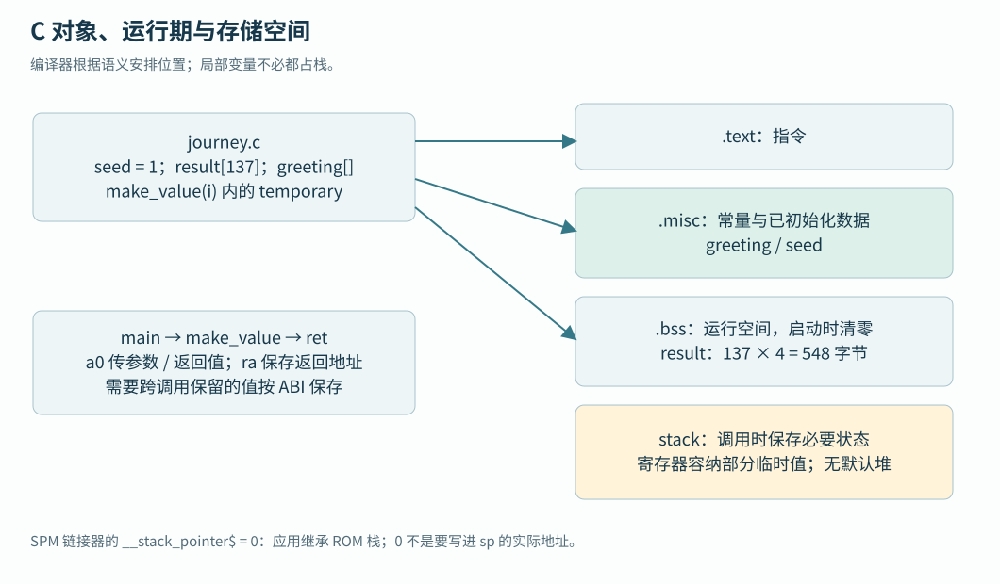

第四篇 · 裸机软件、启动与验证
13 · 裸机 C 程序运行模型
从对象、调用和初始化理解存储布局。
本章目录 · 节与小节
从对象、调用和初始化理解存储布局。 前置：07 · 地址空间与访问属性。
13.1 指令与数据的存储需求
13.1.1 裸机软件栈的职责分层
软件栈是完成一次程序执行所需的多层软件。对于本书的裸机路径，最上层是应用算法，下面是格式化输出、设备驱动和少量运行支持，启动汇编为它们建立共同的执行环境。这里没有操作系统替应用管理进程、虚拟内存和文件；这些层次仍然需要各自完成初始化和错误处理。
| 层次 | 本地实现 | 一次输出中的作用 |
|---|---|---|
| 应用 | journey.c 的 main | 计算并逐项检查结果，决定返回码 |
| 通用功能 | printf 实现与调用接口 | 将整数变成字符，逐字交给输出函数 |
| 设备接口与硬件抽象 | sw/lib/dif、sw/lib/hal | DIF 操作控制器；HAL 可组合事务以访问 SD/NOR/EEPROM 等外部器件 |
| 启动与运行支持 | sw/lib/crt0.S、链接脚本、libcheshire | 建立栈/gp、清 BSS、进入 main，并向测试环境报告退出结果 |
| 启动固件与装载者 | Boot ROM、VIP 或后续阶段 | 让程序字节到达目标存储，按入口契约交接执行 |
把一次 printf("%u", sum) 沿这些层向下追踪，就能区分几种故障：应用未走到调用处，格式化库没有链接，UART 尚未配置，MMIO 地址错误，或者引脚/接收端不可用。只有最后一层才真正访问硬件寄存器；上层同样会消耗栈和指令存储。
官方软件栈还覆盖 Linux 路径：后续加载器准备主存映像，OpenSBI 提供监管态软件调用的固件服务，U-Boot 再组织内核启动。本书先完成裸机闭环；启动后续阶段解释它们在本地代码中的位置。它们不是执行这个数组 C 程序的必要组成部分。
官方概念入口：Software Stack；本地消费者：库与启动构建规则、DIF/HAL 路径字典、后续加载器。
13.1.2 贯穿示例的指令与对象
CPU 取到的是存储器中的机器码，不是 C 源文件。机器码告诉它执行什么，数据保存被运算的值，两者都需要可达的地址。即使只有一个 CPU、没有操作系统，处理器也要取得循环指令、读取初值并保存结果。寄存器很快但容量有限，而且函数调用会复用它们。
本书使用 journey.c 作为贯穿程序：生成 137 个整数、逐个检查并打印总和。下面截取其计算部分；完整文件还包含 UART 初始化和后续向量对照分支。选择 137 是为了以后覆盖向量循环的尾部。
#define N 137u
volatile uint32_t seed = 1;
volatile uint32_t result[N];
const char greeting[] = "Hello Cheshire!";
__attribute__((noinline)) uint32_t make_value(unsigned i) {
uint32_t temporary = 3u * i + seed;
return temporary;
}
/* main 中的标量阶段 */
unsigned errors = 0;
uint32_t sum = 0;
for (unsigned i = 0; i < N; ++i) result[i] = make_value(i);
for (unsigned i = 0; i < N; ++i) {
errors += result[i] != 3u * i + 1u;
sum += result[i];
}seed 在整个程序期间存在，启动时必须是 1。result 同样具有整个程序的存储期，需要 137×4=548 字节，并按 C 语言规则在进入 main 前为零。greeting 是固定内容的字符数组，包含末尾的零字符，输出函数按它识别字符串结束。N 是预处理宏，替换成数值后没有一份必须存到 RAM 的“N 变量”。
i、temporary、sum 和 errors 用于一次调用或循环。编译器可以把它们放在寄存器，也可能为了跨调用保存、取地址或寄存器不足而放入栈。源码中的局部变量并不都对应固定 RAM 槽，查看机器码才能知道本次构建的选择。volatile 在这里让全局数组访问易于观察，它的完整边界将在驱动章解释。
13.2 函数调用与栈帧
main 调用另一个函数时，需要保留“回来后从哪里继续”，以及调用结束后仍会使用的值。再发生嵌套调用，就需要保存多层状态。栈为这些状态提供后进先出的空间：进入函数时向下移动栈指针 sp，预留本次调用的栈帧；返回前取回保存状态，并恢复 sp。栈帧还可保存局部数组和溢出到内存的临时值。
RISC-V 用 ra 保存返回地址，a0 等寄存器传参数和返回值。叶子函数若只用临时寄存器，可能没有栈帧；优化器还可以把小函数内联到调用处。完整程序包含 UART、测频和 printf 等调用，因此需要有效栈。为方便跟踪，实际示例的 make_value 使用 noinline 属性保留调用边界；具体帧大小由反汇编确认。

13.3 ABI 约定软件之间的边界
应用二进制接口（ABI）规定不同编译单元如何相互调用，包括参数、返回值、哪些寄存器由谁保存，以及栈对齐要求。本教材采用 lp64d：long 和指针为 64 位，int 为 32 位，浮点参数采用双精度硬浮点调用约定。它决定函数之间怎样合作，AXI 数据宽度仍由硬件配置决定。
调用者保存寄存器的旧值若还需要，由调用者在调用前保留；被调用者保存寄存器若被函数使用，由该函数恢复。常规 RISC-V ABI 的栈有 16 字节对齐要求，启动汇编必须建立能够承接编译器代码的边界。Boot ROM 和应用 crt0 还保存进入时上下文，不能只看某个早期 sp 数值判断最终调用状态。中断的现场保存入口将在第 19 章核对。
13.4 有初值与零初始化的不同责任
链接器为 seed 分配空间，并把数值 1 的字节保存在待装载内容中。加载器把这些字节放进目标存储，main 才能读到初值。result 的初态全为零，可以只记录所需空间而不在文件中保存 548 个零字节；本地应用启动代码按区间清零。因此“占用目标 RAM”和“占用文件字节”是两件不同的事。
没有操作系统时，由 Boot ROM、主机加载器和应用启动汇编分担这些责任。Boot ROM 使片上存储可用并建立初始栈；加载器放置机器码和初值；应用 crt0 设置调用环境、清零数据、建立异常入口，再调用 main。自定义入口应当完整承担相同的前置条件。
13.5 用节名表达存储用途
13.5.1 按初始化和访问方式分组
分节的目的不是要求读者记住几个缩写，而是让工具分别处理性质不同的内容：指令需要可执行，常量需要保存确定字节，可写初值需要在开始前装入，零初始化区只需预约空间并清零。分组后，链接器可以把代码放在可取指区域，把可写对象放在 RAM；加载器也能避免在镜像中保存大量无意义的零。
这种组织还便于统计容量和定位错误。例如 result 扩大一倍主要增加 RAM 需求，不必同等增加 ELF 中的载荷；增加常量权重数组则同时增加镜像和运行存储。节名本身不构成硬件保护：本地 .misc 混合只读/可写对象，若需要只读保护，还须由布局及实际 PMA/PMP/页表能力落实。
13.5.2 常见节名与本地合并规则
工具把用途相近的内容分组为 section，中文称“节”。函数机器码通常进入 .text；字符串等只读内容进入 .rodata；需要文件提供初值的可写全局对象进入 .data；零初始化的全局或 static 对象通常进入 .bss。static 局部对象也具有整个程序的存储期，和每次调用重新建立的自动局部变量不同。
这些是常见输入节名。当前 spm.ld 把 .rodata、.data 及对应的小数据节合并成 .misc 输出节，故 ELF 中未必单独列出 .data/.rodata。seed 在 .misc，result 在 .bss；.misc 名称也不表示里面只有只读数据。构建章的 map 文件会展示合并过程。
| 内容 | 存储要求 | 当前责任方 |
|---|---|---|
| make_value / main 指令 | 可取指的代码字节 | 编译链接生成，加载器放入 .text 对应地址 |
| greeting / seed | 固定字符 / 可写的初值 1 | 链接进 .misc，加载时写入 |
| result[137] | 548 字节，启动时为零 | 链接器保留 .bss，crt0 清零 |
| 调用保存状态 | 对齐且容量足够的栈 | 启动建立 sp，函数维护各自栈帧 |
13.6 容量与堆的边界
堆是供动态分配器管理的存储区域，malloc/free 通过运行时算法分配和归还空间。本程序使用固定全局数组与函数栈，没有调用 malloc，因此无需假设存在正在使用的堆。以后需要动态分配时，应明确区域、边界、失败处理和库适配；链接脚本中的空闲地址不会自行形成分配器。
应用 SPM 链接预算为低 64 KiB，物理阵列为 128 KiB，栈由 Boot ROM 放在高端。链接器检查静态布局，实际栈最深占用由调用关系和中断决定。后续向量实验会预约独占缓冲区，扩大局部数组或嵌套中断时需要重新计算间距。
13.7 把数组、栈和设备缓冲分开验证
journey 的全局 result[137] 在 BSS 中占 548 字节，crt0 在进入 main 前清零；常量字符串和已初始化变量由 ELF 装载段提供。RVV 的 a/b/c 则是约定物理 SPM 区域的指针，不由链接器自动分配。静态区没有越界，并不能证明运行栈不会向下侵入该区；先从 map/nm 确定边界，再在目标环境观测最大栈使用。
函数实参通常在 a0… 寄存器中传递，需要跨调用保存的值按 ABI 保存；优化器可能内联函数、消去局部变量或让它一直留在寄存器。学习时同时看 C、反汇编和符号，避免用“每个 C 变量都有一个固定 RAM 地址”解释程序。代码装载、BSS 初始化、栈建立、VS/FS 开启各有独立责任。
result 后来会被循环覆盖，为什么还讲启动清零？
零初始化是进入 main 前的语言环境契约，其他分支可能先读它。贯穿例也检查初态，把启动责任与后续计算分开。